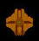
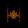
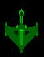
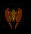
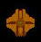
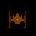
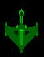
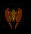

| Schiff Nummer | Bild | Laser | Torpedos | Torpedo-sprengkraft | Torpedo-geschwindigkeit | Spezialwaffe | Eigenschaft der Spezialwaffe | Trefferradius |
| 1 | 8 | 6 vorne | 15 | 8 | Shuttle | verfolgt Gegner und feuert mit Laser auf ihn | 11 | |
| 2 | 9 | 8 vorne, 2 hinten | 20 | 12 | Traktorstrahl | emmitiert ein gerichtet Gravitionsfeld zum abschleppen von Schiffen | 13 | |
| 3 |  |
10 | 7 vorne, 2 hinten | 25 | 14 | Interphasenfeld | ermöglich durch Objekte hindurchzufliegen(mit Schaden), neutralisiert Gravitation | 15 |
| 4 |  |
9 | 6 vorne, 2 hinten | 15 | 8 | Lenkrakete | verfolgt Gegner mittels optischen Leitsystem, starke Explosion | 7 |
| 5 | 10 | 6 vorne, 4 hinten | 20 | 12 | Spezialantrieb | erhöht Geschwindigkeit des Schiffes | 9 | |
| 6 | 10 | 4 vorne, 3 hinten | 20 | 14 | Energiedämpfungstorpedo | entzieht bei Treffer dem Gegner verübergehend alle Energie und macht ihn manövrirunfähig | 11 | |
| 7 | 8 | 8 vorne, 2 hinten | 25 | 16 | künstliches Wurmloch | erzeugt vorübergehend ein "Einbahn"-Wurmloch vor dem Schiff | 19 | |
| 8 |  |
10 | 5 vorne | 20 | 10 | Schockwelle | schleudert Gegner weg und beschädigt ihn, Kollision zweier Wellen erzeugt Subraumspalt | 22 |
| 9 | 9 | 7 vorne, 2 hinten | 20 | 12 | Tarnvorrichtung | macht Schiff unsichtbar, Waffen können nicht abgefeurt werden | 14 | |
| 10 |  |
6 | 4 vorne | 15 | 8 | Subraumtorpedo | erzeugt bei Zündung oder Kollision einen Subraumspalt | 10 |
| 11 | 10 | 8 vorne, 2 hinten | 20 | 12 | Schild | schütz Schiff vor allen Waffenfeuer und Kollisionsschäde, Mienen können ihn aber durchdringen | 16 | |
| 12 | 10 | 5 vorne, 3 hinten | 25 | 14 | Mienen | explodieren bei Kollision mit allem | 14 |